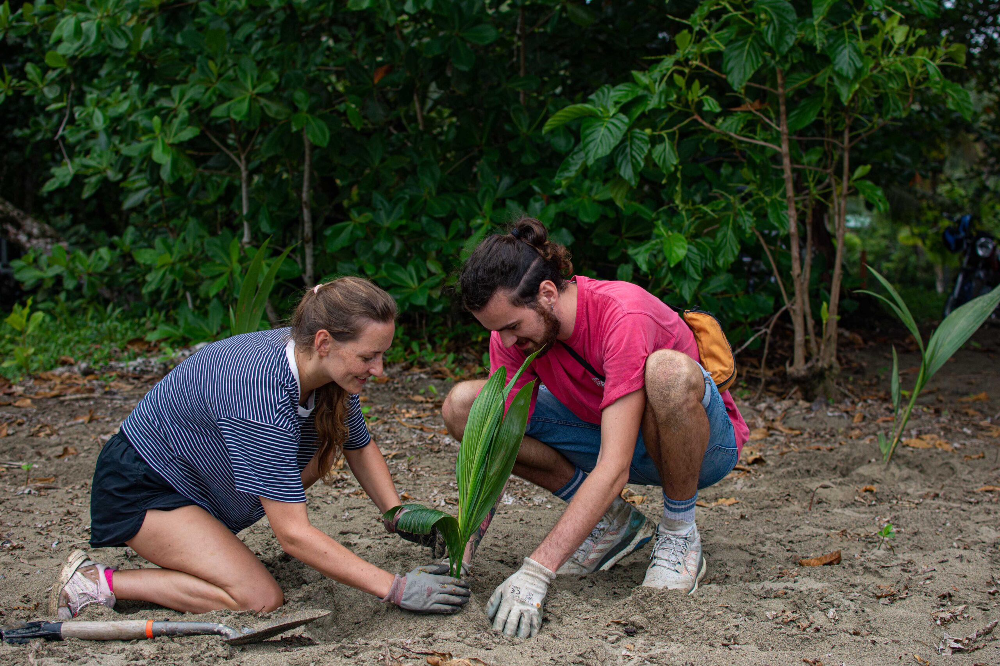
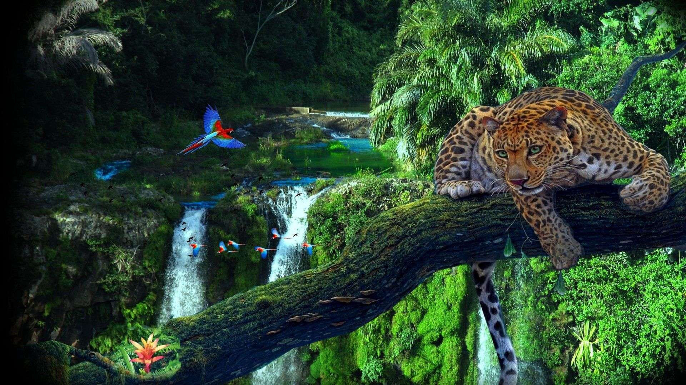

Restore damaged spaces
Replanting native species and protecting green areas help restore ecosystems and reduce long-term land damage.
- Join tree planting events
- Protect natural green spaces
- Promote native plants
Green Roots is a student-focused website that explains why land ecosystems matter and how simple local actions can support biodiversity, reduce habitat damage, and improve environmental responsibility.
This website is not only about describing SDG 15. It encourages practical habits, community action, and long-term thinking.

Life on Land focuses on forests, biodiversity, ecosystems, and the sustainable use of natural resources. Healthy land supports food systems, wildlife, cleaner air, and stronger communities.

Replanting native species and protecting green areas help restore ecosystems and reduce long-term land damage.

Biodiversity keeps ecosystems balanced. When species disappear, the health of the whole environment is affected.

Students and communities can make a visible impact through clean-ups, awareness campaigns, and responsible habits.
These quick links guide users to important areas of the website and make the content easy to access.